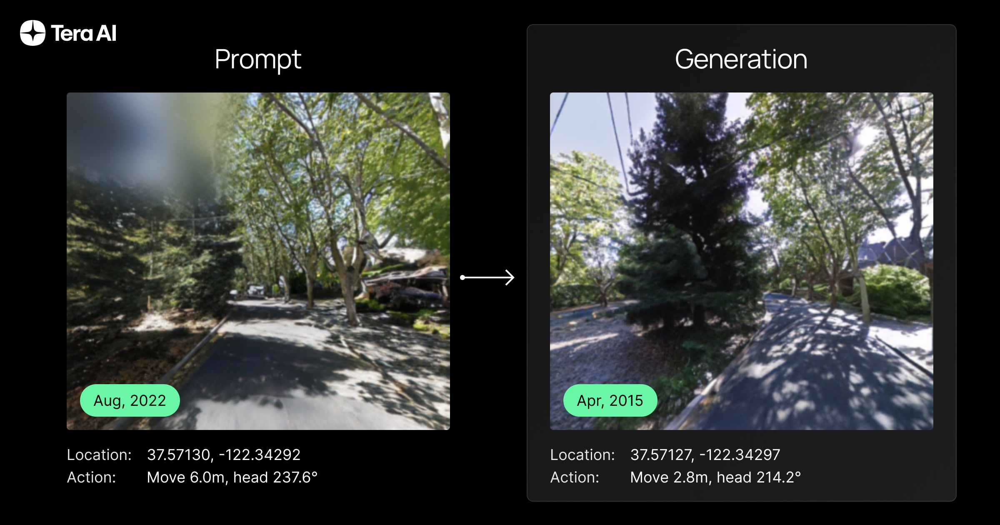
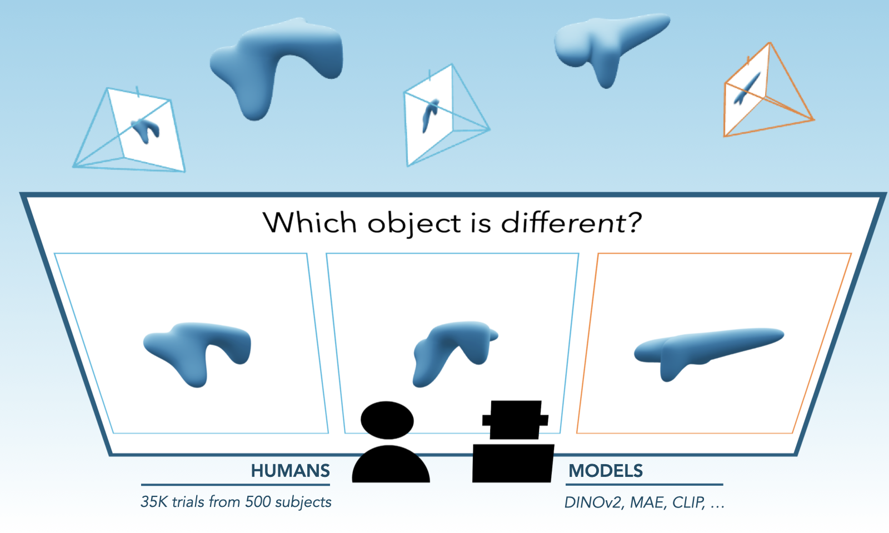
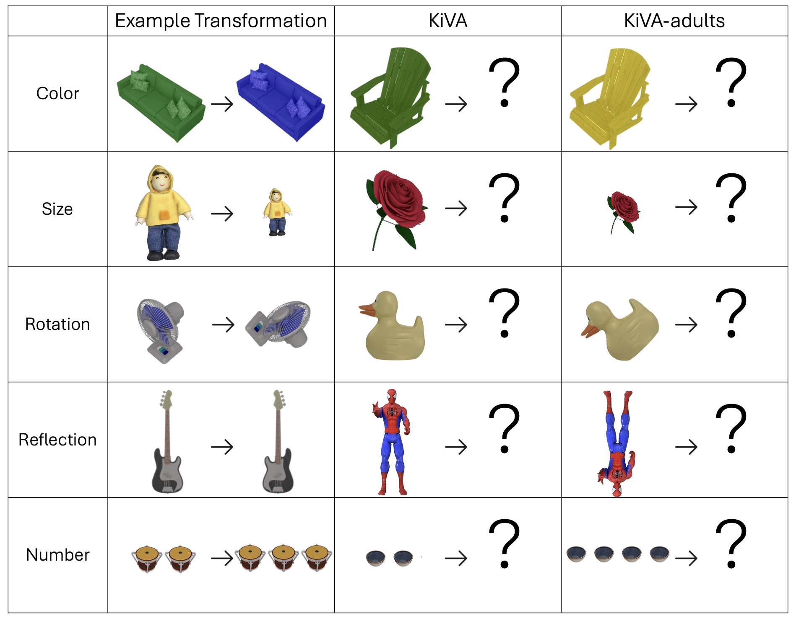

Looking for strong graduate/undergraduate students to collaborate. Please reach out if you are interested.
Research
Her research aims to build up the AI system with less supervision and strong robustness. Explorations include representation learning, self-supervised learning, and generative modeling.
Your browser does not support the video tag.
Whole-Body Conditioned Egocentric Video Prediction
Yutong Bai *, Danny Tran *, Amir Bar *, Yann LeCun † , Trevor Darrell † , Jitendra Malik †
Sequential Modeling Enables Scalable Learning for Large Vision Models
Yutong Bai *, Xinyang Geng *, Karttikeya Mangalam , Amir Bar , Alan Yuille , Trevor Darrell Jitendra Malik Alexei A. Efros
Point-Level Region Contrast for Object Detection Pre-Training
Yutong Bai , Xinlei Chen , Alexander Kirillov , Alan Yuille Alexander C. Berg
(Nominated for CVPR Best Paper - Top 0.4%)

TARDIS STRIDE: A Spatio-Temporal Road Image Dataset and World Model for Autonomy
Héctor Carrión *, Yutong Bai *, Víctor A. Hernández Castro *, Kishan Panaganti , Ayush Zenith , Matthew Trang , Tony Zhang , Pietro Perona Jitendra Malik

Evaluating Multiview Object Consistency in Humans and Image Models
Tyler Bonnen , Stephanie Fu , Yutong Bai , Thomas O'Connell , Yoni Friedman , Nancy Kanwisher , Josh Tenenbaum , Alexei Efros

KiVA: Kid-inspired Visual Analogies for Testing Large Multimodal Models
Eunice Yiu , Maan Qraitem , Anisa Noor Majhi , Charlie Wong , Yutong Bai , Shiry Ginosar , Alison Gopnik , Kate Saenko
"I Know It When I See It": Mood Spaces for Connecting and Expressing Visual Concepts
Huzheng Yang , Katherine Xu , Michael D Grossberg , Yutong Bai , Jianbo Shi
Masked Autoencoders Enable Efficient Knowledge Distillers
Yutong Bai , Zeyu Wang , Junfei Xiao , Chen Wei , Huiyu Wang , Alan Yuille Yuyin Zhou , Cihang Xie
Can CNNs Be More Robust Than Transformers?
Zeyu Wang , Yutong Bai , Yuyin Zhou , Cihang Xie
Fast AdvProp
Jieru Mei , Yucheng Han , Yutong Bai , Yixiao Zhang , Yingwei Li , Xianhang Li , Alan Yuille Cihang Xie
TransFG: A Transformer Architecture for Fine-grained Recognition
Ju He , Jie-Neng Chen , Shuai Liu , Adam Kortylewski , Cheng Yang , Yutong Bai , Changhu Wang
Are Transformers More Robust than CNNs?
Yutong Bai , Jieru Mei , Alan L Yuille Cihang Xie
Glance-and-Gaze Vision Transformer
Qihang Yu , Yingda Xia , Yutong Bai , Yongyi Lu , Alan L Yuille Wei Shen
Mask Guided Matting via Progressive Refinement Network
Qihang Yu , Jianming Zhang , He Zhang , Yilin Wang , Zhe Lin , Ning Xu , Yutong Bai , Alan Yuille
Can Temporal Information Help with Contrastive Self-Supervised Learning?
Yutong Bai ,
Haoqi Fan ,
Ishan Misra ,
Ganesh Venkatesh ,
Yongyi Lu ,
Yuyin Zhou ,
Qihang Yu ,
Vikas Chandra ,
Alan Yuille
C2FNAS: Coarse-to-Fine Neural Architecture Search for 3D Medical Image Segmentation
Qihang Yu ,
Dong Yang ,
Holger Roth ,
Yutong Bai ,
Yixiao Zhang ,
Alan Yuille Daguang Xu
Semantic Part Detection via Matching: Learning to Generalize to Novel Viewpoints from Limited Training Data
Yutong Bai , Qing Liu , Lingxi Xie , Weichao Qiu , Yan Zheng , Alan Yuille
Clevr-ref+: Diagnosing Visual Reasoning with Referring Expressions
Runtao Liu , Chenxi Liu , Yutong Bai , Alan L Yuille
CoKe: Contrastive Learning for Robust Keypoint Detection
Yutong Bai , Angtian Wang , Adam Kortylewski , Alan Yuille
Delving Into Masked Autoencoders for Multi-Label Thorax Disease Classification
Junfei Xiao , Yutong Bai , Alan Yuille Zongwei Zhou